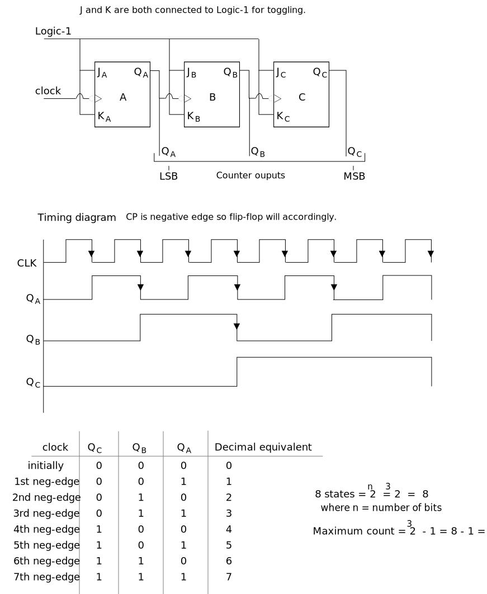
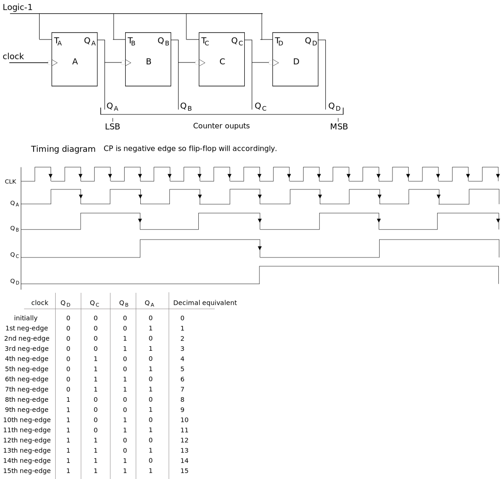
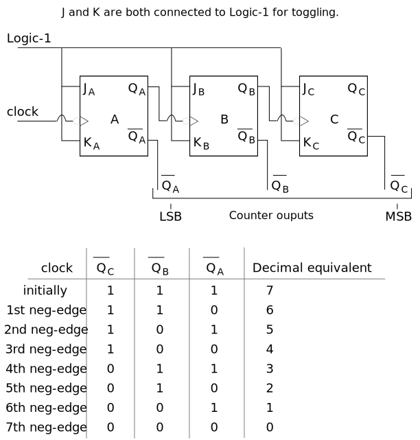

Counters
- Counters are the sequential circuit.
- It is used to count clock pulses (can store or display).
- It is used when we want to count occurance of a particular event.
- Counters are a special type of register. It is made from flip-flops.
- It can be used in home appliances such as microwave,
AC etc. Suppose you set 30 sec. in microwave, then counter starts from 30 decreases every
second and it off the microwave when it reaches to 0.
Types of counters
- Synchronous counter: Every flip-flop have Clock Pulse.
- Asynchronous counter: Only first ff have CP.
Synchronous counter
Ring counter
- A ring counter is a synchronous counter. The synchronous counter has a common clock signal that
tiggers all the flip-flops at the same time.
- A ring counter is a circular shift register with only one flip-flop being set at a time and all
others are cleared.
- The single bit is shifted from one flip-flop to the other to produce the sequence of timing
signals.
- It can be made from JK or D flip-flop.
- A ring counter is a typical application of shift register.
- The ring counter is almost the same as the shift register. The only change is that the ouput of
the last flip-flop is connected to the input of the first flip-flop in the case of the ring
counter but in the case of the shift register it is taken as output.
- Number of states in ring counter = number of flip-flop used.
Asynchronous counter
- Here we can't jump like - 0 → 2 ✗
3 bit Up counter
- 0 → 1 → 2 → 3 → 4 → 5 → 6 → 7
- This counter will start from lower value (0) and count till higher value. (7)
- As it is 3 bit so the max value in 3 bit is 7.

4 bit up counter
- Here we will use T flip-flop because all we want is toggle.

3 bit down counter

Applications of counter
Here are the applications of the counter in digital electronics
- Frequency measurement and division: The counter is used to measure the frequency of a signal, simply
by counting the number of cycles
in a particular given time period and the counter is also used to divide the input clock
frequency by a fixed integer value.
- Timing: The counter is also used to generate timing signals like pulse-width modulated (PWM)
signals. These signals are commonly used in power electronics to control the speed of motors
and regulate the brightness of LEDs
- Binary arithmetic: Binary arithmetic operations like addition, subtraction, multiplication and
division are used in digital systems by counters.
- Data storage: Counters can also be used as memory elements in a digital circuit if take an example
of a
binary operator. The binary counter can be used to store a binary value that represents a state
in a digital system
- Digital Signal Processing: Counters are also used in digital signal processing applications like
filtering and signal analysis.